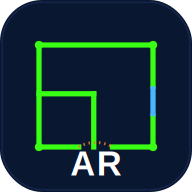

Αποτύπωσε χώρο με AR: τοίχοι με πάχος, πόρτες, παράθυρα, μπαλκονόπορτες & κενά — και εξαγωγή σε DXF με layers για ProgeCAD.
Ενδεικτική μέτρηση από κάμερα/AR — όχι τοπογραφικό όργανο. Επαληθεύστε με πιστοποιημένο όργανο για επίσημη χρήση.